"Regimen" is an app for skincare enthusiasts to track and review products -- and to help each other make better decisions in the process. For this project, I worked on my own within a two-week design sprint.
"It's not vanity, it's self-care." - Jonathan Van Ness, Queer Eye
Skincare is a relatively recent interest of mine. Growing up as a nerdy tomboy, I used to believe that I had to choose between either "brains" or "beauty". Even now, many people often find skincare to be unapproachable -- it's too feminine, too uppity, too confusing. I felt that the skincare industry was due for a refresh.
My goals were to:
With that, I filled out a Lean UX Canvas to help me come up with a few hypotheses, along with corresponding business outcomes that could gauge the success of the app. 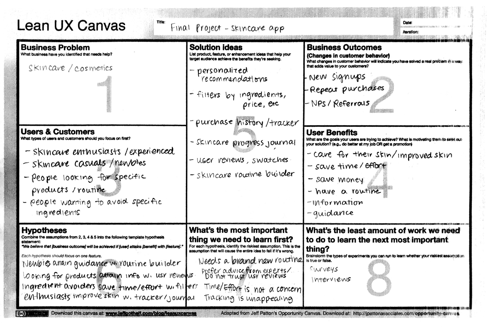
When it comes to skincare, there is an overwhelming wealth of information available -- from beauty counters, to social media influencers, to magazines. But when it comes to an independent, dedicated digital product, the market is currently lacking. After multiple searches on Google, Reddit, and the App Store, I found only a handful of skincare-related tools and resources. 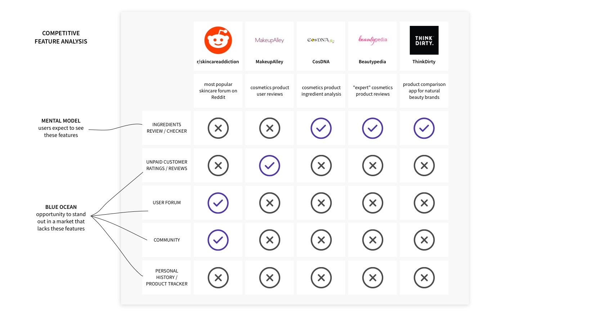
Most of these resources cater to skincare enthusiasts with a relatively in-depth knowledge of skincare ingredients -- the ones who would check ingredients labels and know what "butylene glycol" means. At the same time, the branding is usually quite feminine -- lots of pink with glittery, flowery, or cute imagery. I decided to position my product to be more accessible and androgynous in order to differentiate from the rest of the market. 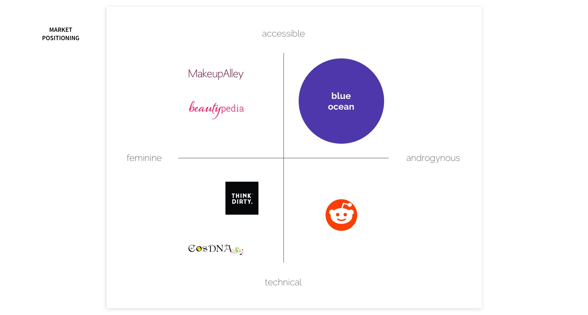
To better understand my target users, I started with two in-person interviews, then migrated to Reddit skincare forums and interviewed 11 more. I asked interviewees about their current interest, habits, and major pain points related to skincare. Some of the feedback I received included:
“I buy things and they don’t work. I’m not getting the glow. I don’t finish creams and just buy a new one.”
“There's all this medicinal language around that stuff. I guess if I could take my dermatologist to Sephora, that would help with the anxiety quite a bit.”
“Trying to figure out what ingredients in products break me out! I literally have started a spreadsheet.”
I was particularly surprised by all the feedback from interviewees discussing how their concerns and frustrations drove them to keep track of products they've used or tested in a spreadsheet, even though they don't necessarily enjoy that process.
I also conducted a survey, gathering 353 survey responses, mostly via skincare forums on Reddit. The demographic of the survey respondents were 81% female, with an average age of 30. 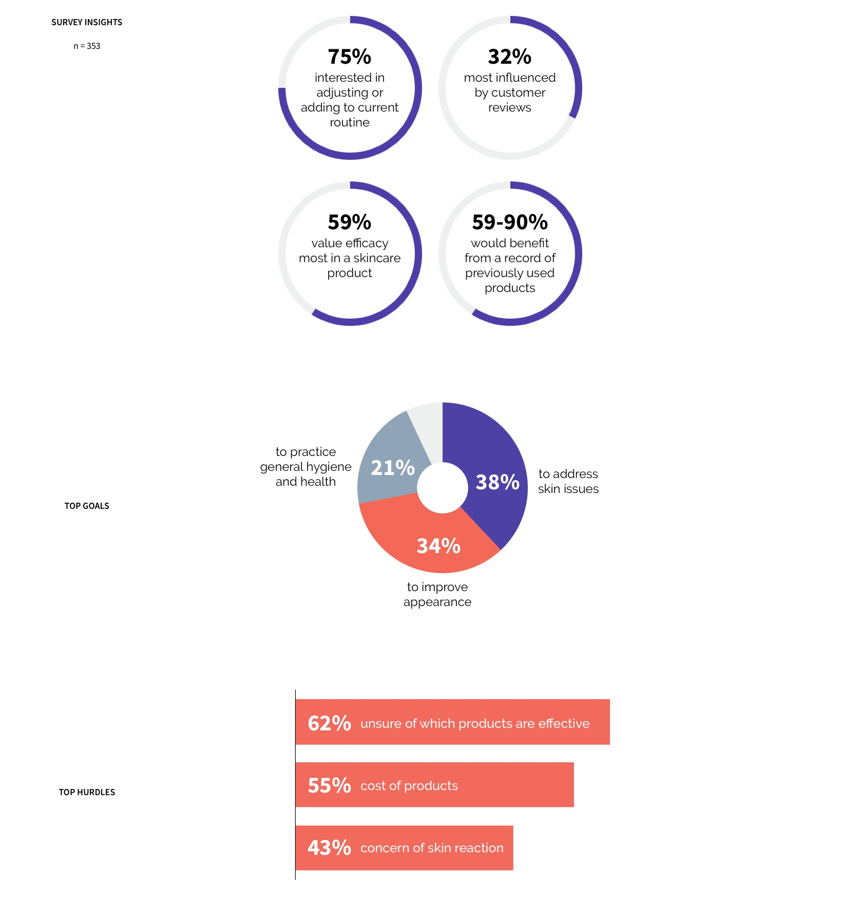
To help me find patterns in the data I've collected, I utilzied the affinity diagram method to cluster my notes into major themes. 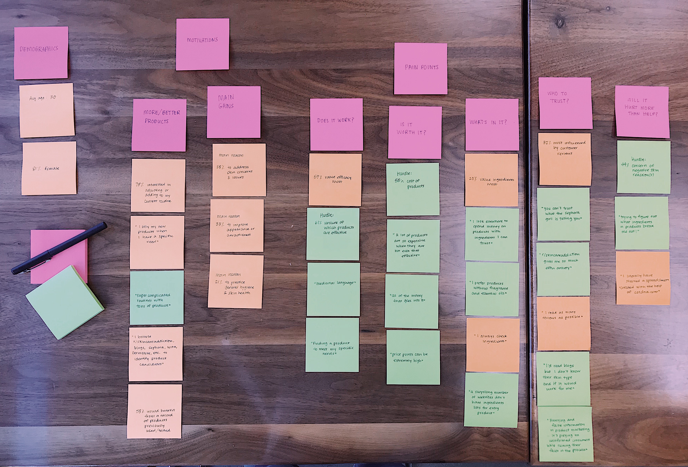
From there, I put a face to the insights by creating a user persona. Nicole represents the majority of the target users -- female, aged 30, and interested in adjusting or adding to her current skincare routine. I made sure to note her goals, needs, and top three pain points when it comes to skincare. 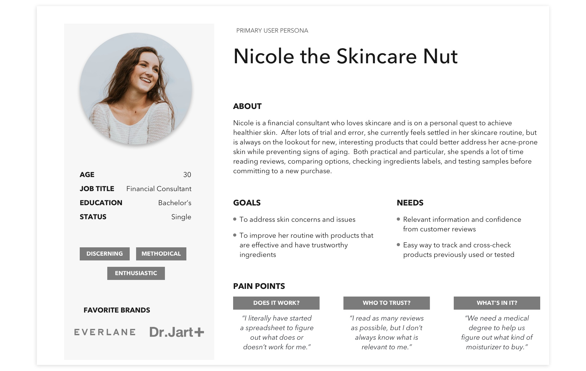
I also created a secondary persona to represent a smaller but highly correlated segment of the data. It was important to keep someone like Nathan in mind while designing my product so that it accommodates and appeals to those users with a bit more needs than the Nicoles. 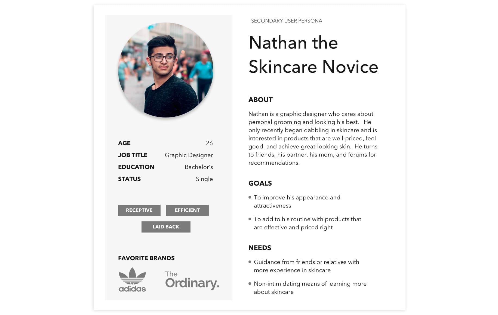
Finally, I provided context to Nicole's current pain points by creating her journey. 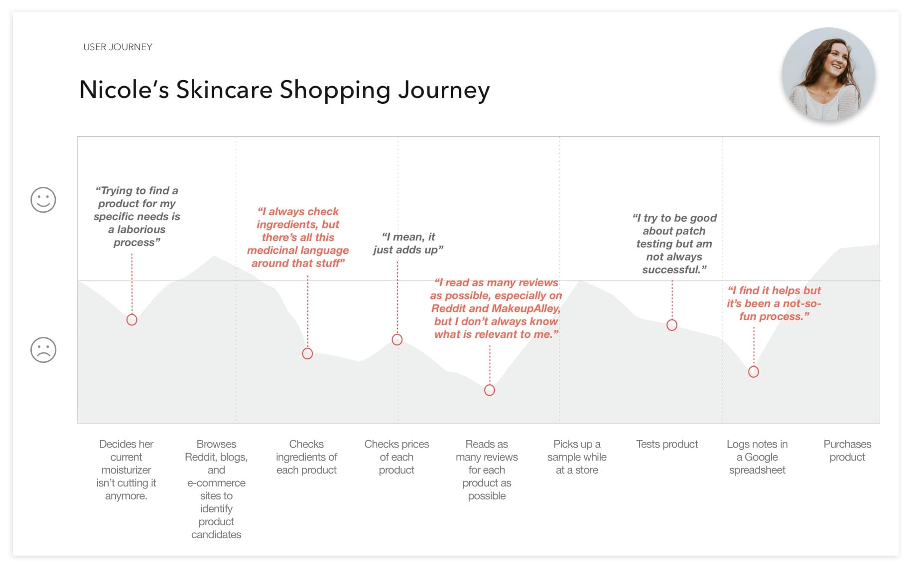
I had waffled back and forth over whether to start with an app or a website. On the one hand, there were almost no skincare apps -- a huge blue ocean! On the other, a few people had pointed out to me that they wouldn't think to download an app just to read up on skincare products -- they would simply fire up Google from their computer.
However, after considering Nicole's journey and her potential touchpoints with the product, I eventually settled on creating an app. Nicole might be thinking about skincare from her couch, from her sink counter, from a physical store -- settings where she may not have instant access to a computer, but is likely to have a phone with her. Additionally, I could potentially scale the app to include unique mobile features (such as a barcode scanner) in the future.
During the ideation process, I considered how I might...
I then prioritized my various feature ideas using the MOSCOW method. For the most part, I took into consideration impact vs effort, given that this was a new product and I had limited time and budget.
However, I also took into consideration the Kano Model (customer delight versus product function), particularly when it came to features that would help users better understand ingredients. Although it would take more time and effort to implement, I decided to include icons or illustrations to represent ingredient benefits instead of a text definition in a text box or glossary. I believed the former would better appeal to my target users and create much more customer delight, while the latter options - though useful - would be pretty boring. 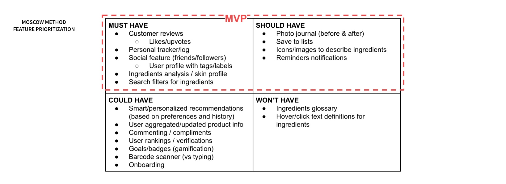
From there, I determined what the minimum viable product would consist of: An app for people looking to improve their skincare routine to track and review products.
I conducted five usability tests on the paper prototype, made some key changes to the design based on user feedback, then conducted another five tests on the wireframe. 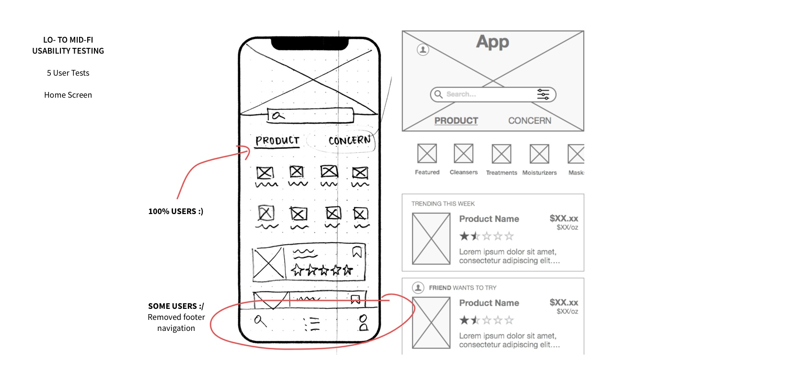
In the above example, all of the users commented on how they appreciated the option to browse products by product type/category or by concern, so I made sure to keep that design.
However, some users seemed confused by the footer and would repeatedly ask me what each icon was for. Initially, I thought the footer simply needed labeling for clarity. But when I noticed that these users would use the back button when returning to the search screen instead of tapping the search icon in the footer, I began to wonder if the app needed a footer at all.
Although unconventional, I decided to remove the footer after considering how often users would likely engage with various features of the app. I figured that if users were to view specific features frequently, then a footer would be a better choice because it would allow easier access to them -- it would be visible and closer to their thumb. On the other hand, if they were only for occasional use, then it would be safe to hide them away in the user profile section the way I ultimately set it up in the final prototype. Of course, I would track user behavior and bring back the footer if it turns out those features were indeed accessed regularly. It may also be worthwhile to A/B test these two designs to determine which enables more user engagement.
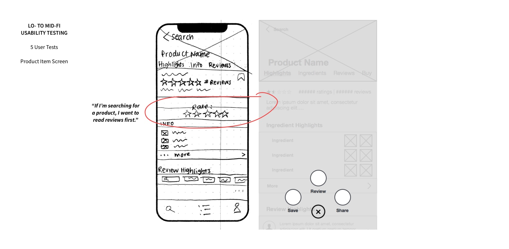
In this second example above, a couple of users pointed out that the call to rate a product seemed aggressive and obtrusive. I decided that a button hovering at the bottom of the screen would alleviate this issue while still remaining noticeable, and additionally be easier for the user to access.
I decided the aesthetic of the app should feel trendy, cheerful, and friendly to appeal to its target users. I gathered inspiration from various brands with similar attributes and created a mood board. 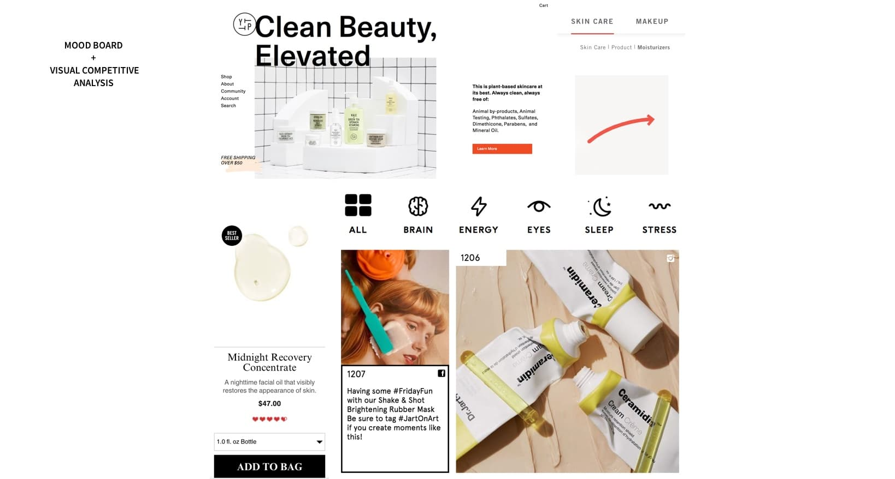
I conducted five desirability tests on the mood board by asking users to describe how they felt about it, using Jennifer Aaker's Brand Personality Framework as a reference.
Based on this feedback, I decided to include bolder colors and rounder design elements to achieve a friendlier look and feel.
While designing the hi-fi, I created a style guide to keep track of the atomic design elements used and to ensure consistency from screen to screen. 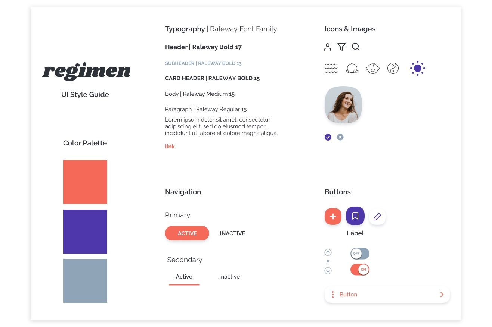
I created demos of the high-fidelity prototype using Flinto. From the home screen, the user is able to browse products by category or search, filter items, or view their profile.
Here the user selects a product and has the ability to perform such tasks as reviewing the item or saving it to a list. The user is also able to view various types of information related to the item.
The next steps are to: